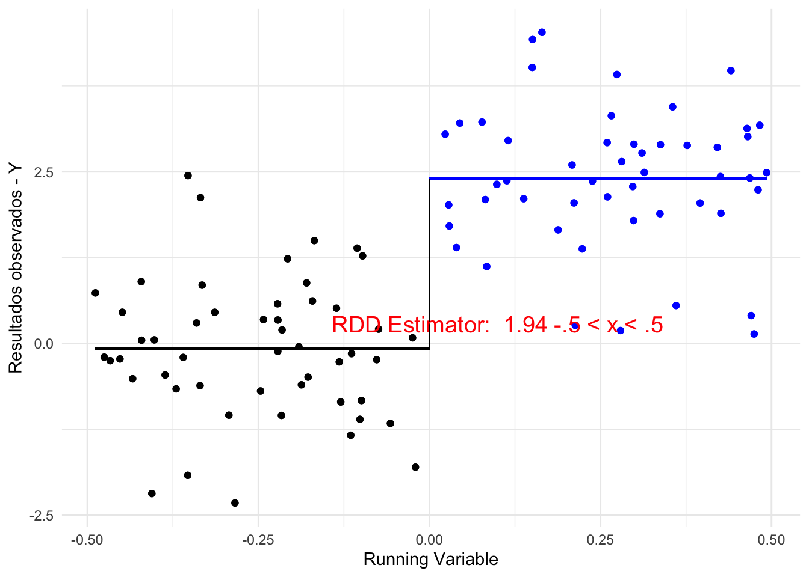
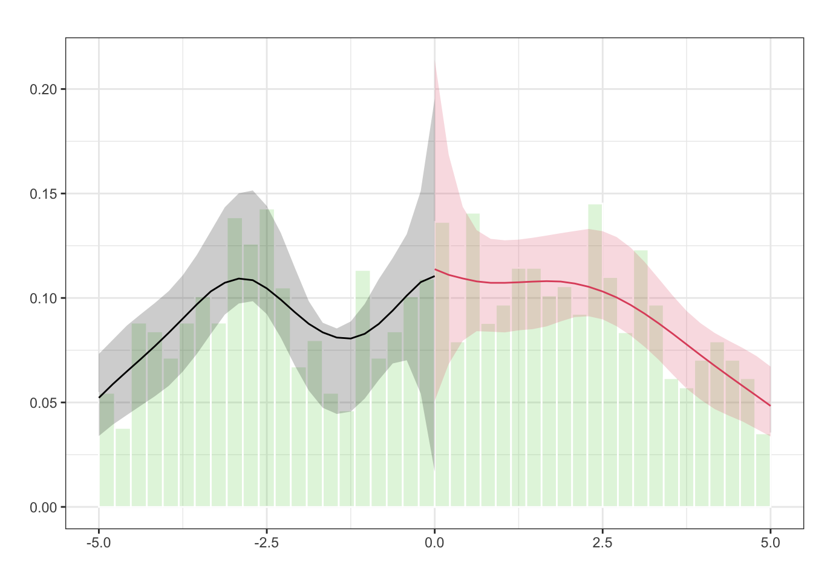

Capítulo 8 McCray test
rddentisity
8.2 Simulação - Estimativa (1)
## Warning in geom_segment(aes(x = min(x), xend = 0, y = mean_black, yend = mean_black), : All aesthetics have length 1, but the data has 2000 rows.
## ℹ Please consider using `annotate()` or provide this layer with data containing
## a single row.## Warning in geom_segment(aes(x = 0, xend = max(x), y = mean_blue, yend = mean_blue), : All aesthetics have length 1, but the data has 2000 rows.
## ℹ Please consider using `annotate()` or provide this layer with data containing
## a single row.## Warning in geom_segment(aes(x = 0, y = mean_black, xend = 0, yend = bracket_height), : All aesthetics have length 1, but the data has 2000 rows.
## ℹ Please consider using `annotate()` or provide this layer with data containing
## a single row.## Warning in geom_segment(aes(x = 0, y = mean_blue, xend = 0, yend = bracket_height), : All aesthetics have length 1, but the data has 2000 rows.
## ℹ Please consider using `annotate()` or provide this layer with data containing
## a single row.
8.3 Simulação - Estimativa (2)
## Warning in geom_segment(aes(x = min(x), xend = 0, y = mean_black, yend = mean_black), : All aesthetics have length 1, but the data has 406 rows.
## ℹ Please consider using `annotate()` or provide this layer with data containing
## a single row.## Warning in geom_segment(aes(x = 0, xend = max(x), y = mean_blue, yend = mean_blue), : All aesthetics have length 1, but the data has 406 rows.
## ℹ Please consider using `annotate()` or provide this layer with data containing
## a single row.## Warning in geom_segment(aes(x = 0, y = mean_black, xend = 0, yend = bracket_height), : All aesthetics have length 1, but the data has 406 rows.
## ℹ Please consider using `annotate()` or provide this layer with data containing
## a single row.## Warning in geom_segment(aes(x = 0, y = mean_blue, xend = 0, yend = bracket_height), : All aesthetics have length 1, but the data has 406 rows.
## ℹ Please consider using `annotate()` or provide this layer with data containing
## a single row.
8.4 Simulação - Estimativa (3)
## Warning in geom_segment(aes(x = min(x), xend = 0, y = mean_black, yend = mean_black), : All aesthetics have length 1, but the data has 200 rows.
## ℹ Please consider using `annotate()` or provide this layer with data containing
## a single row.## Warning in geom_segment(aes(x = 0, xend = max(x), y = mean_blue, yend = mean_blue), : All aesthetics have length 1, but the data has 200 rows.
## ℹ Please consider using `annotate()` or provide this layer with data containing
## a single row.## Warning in geom_segment(aes(x = 0, y = mean_black, xend = 0, yend = bracket_height), : All aesthetics have length 1, but the data has 200 rows.
## ℹ Please consider using `annotate()` or provide this layer with data containing
## a single row.## Warning in geom_segment(aes(x = 0, y = mean_blue, xend = 0, yend = bracket_height), : All aesthetics have length 1, but the data has 200 rows.
## ℹ Please consider using `annotate()` or provide this layer with data containing
## a single row.
8.5 Simulação - Estimativa (4)
## Warning in geom_segment(aes(x = min(x), xend = 0, y = mean_black, yend = mean_black), : All aesthetics have length 1, but the data has 32 rows.
## ℹ Please consider using `annotate()` or provide this layer with data containing
## a single row.## Warning in geom_segment(aes(x = 0, xend = max(x), y = mean_blue, yend = mean_blue), : All aesthetics have length 1, but the data has 32 rows.
## ℹ Please consider using `annotate()` or provide this layer with data containing
## a single row.## Warning in geom_segment(aes(x = 0, y = mean_black, xend = 0, yend = bracket_height), : All aesthetics have length 1, but the data has 32 rows.
## ℹ Please consider using `annotate()` or provide this layer with data containing
## a single row.## Warning in geom_segment(aes(x = 0, y = mean_blue, xend = 0, yend = bracket_height), : All aesthetics have length 1, but the data has 32 rows.
## ℹ Please consider using `annotate()` or provide this layer with data containing
## a single row.
8.7 Identificação fácil vs Estimação difícil
- Identificação de RDD (com n infinito) é bem robusto
- Problema é que a estimação depende de extrapolação
- Extrapolação é um problema difícil
8.9 teste formal da densidade
rdd <- rddensity(X = df$x, vce="jackknife")
summary_part1 <- summary(rdd)[1:4] # Assuming you want to show the first 4 parts here##
## Manipulation testing using local polynomial density estimation.
##
## Number of obs = 1000
## Model = unrestricted
## Kernel = triangular
## BW method = estimated
## VCE method = jackknife
##
## c = 0 Left of c Right of c
## Number of obs 507 493
## Eff. Number of obs 191 219
## Order est. (p) 2 2
## Order bias (q) 3 3
## BW est. (h) 1.823 2.251
##
## Method T P > |T|
## Robust 0.279 0.7803
##
##
## P-values of binomial tests (H0: p=0.5).
##
## Window Length <c >=c P>|T|
## 0.223 + 0.223 26 20 0.4614
## 0.401 + 0.447 40 42 0.9122
## 0.579 + 0.670 58 65 0.5887
## 0.757 + 0.893 71 90 0.1558
## 0.934 + 1.117 98 104 0.7251
## 1.112 + 1.340 115 130 0.3711
## 1.290 + 1.564 133 151 0.3131
## 1.468 + 1.787 155 178 0.2279
## 1.646 + 2.010 172 199 0.1770
## 1.823 + 2.234 191 218 0.1985## NULL8.10 Plot da densidade

## $Estl
## Call: lpdensity
##
## Sample size 507
## Polynomial order for point estimation (p=) 2
## Order of derivative estimated (v=) 1
## Polynomial order for confidence interval (q=) 3
## Kernel function triangular
## Scaling factor 0.507507507507508
## Bandwidth method user provided
##
## Use summary(...) to show estimates.
##
## $Estr
## Call: lpdensity
##
## Sample size 493
## Polynomial order for point estimation (p=) 2
## Order of derivative estimated (v=) 1
## Polynomial order for confidence interval (q=) 3
## Kernel function triangular
## Scaling factor 0.493493493493493
## Bandwidth method user provided
##
## Use summary(...) to show estimates.
##
## $Estplot
8.11 Densidade descontínua - código
# Generate a random sample with a density discontinuity at 0
set.seed(42)
x <- rnorm(2000, mean = -0.5)
x[x > 0] <- x[x > 0] * 2
# Estimation
rdd <- rddensity(X = x)
summary(rdd)
# Density plot (from -2 to 2 with 25 evaluation points at each side)
plot1 <- rdplotdensity(rdd, x, plotRange = c(-2, 2), plotN = 25)8.12 Densidade descontínua - results
##
## Manipulation testing using local polynomial density estimation.
##
## Number of obs = 2000
## Model = unrestricted
## Kernel = triangular
## BW method = estimated
## VCE method = jackknife
##
## c = 0 Left of c Right of c
## Number of obs 1394 606
## Eff. Number of obs 469 207
## Order est. (p) 2 2
## Order bias (q) 3 3
## BW est. (h) 0.607 0.632
##
## Method T P > |T|
## Robust -2.5923 0.0095
##
##
## P-values of binomial tests (H0: p=0.5).
##
## Window Length / 2 <c >=c P>|T|
## 0.057 35 20 0.0581
## 0.115 76 35 0.0001
## 0.172 120 51 0.0000
## 0.230 158 75 0.0000
## 0.287 196 92 0.0000
## 0.345 245 116 0.0000
## 0.402 289 131 0.0000
## 0.460 345 154 0.0000
## 0.517 397 172 0.0000
## 0.575 447 193 0.00008.13 Densidade descontínua - plot
## $Estl
## Call: lpdensity
##
## Sample size 1394
## Polynomial order for point estimation (p=) 2
## Order of derivative estimated (v=) 1
## Polynomial order for confidence interval (q=) 3
## Kernel function triangular
## Scaling factor 0.697348674337169
## Bandwidth method user provided
##
## Use summary(...) to show estimates.
##
## $Estr
## Call: lpdensity
##
## Sample size 606
## Polynomial order for point estimation (p=) 2
## Order of derivative estimated (v=) 1
## Polynomial order for confidence interval (q=) 3
## Kernel function triangular
## Scaling factor 0.303151575787894
## Bandwidth method user provided
##
## Use summary(...) to show estimates.
##
## $Estplot
8.14 Regressão RDD
library(rdrobust)
# Assuming the cutoff is at x=0
basic_model <- rdrobust(y = df$y, x = df$x, c = 0)
summary(basic_model)## Sharp RD estimates using local polynomial regression.
##
## Number of Obs. 1000
## BW type mserd
## Kernel Triangular
## VCE method NN
##
## Number of Obs. 507 493
## Eff. Number of Obs. 123 109
## Order est. (p) 1 1
## Order bias (q) 2 2
## BW est. (h) 1.172 1.172
## BW bias (b) 2.151 2.151
## rho (h/b) 0.545 0.545
## Unique Obs. 507 493
##
## =============================================================================
## Method Coef. Std. Err. z P>|z| [ 95% C.I. ]
## =============================================================================
## Conventional 2.305 0.279 8.256 0.000 [1.758 , 2.852]
## Robust - - 7.544 0.000 [1.785 , 3.037]
## =============================================================================8.15 Regressão RDD - summary
## Sharp RD estimates using local polynomial regression.
##
## Number of Obs. 1000
## BW type mserd
## Kernel Triangular
## VCE method NN
##
## Number of Obs. 507 493
## Eff. Number of Obs. 123 109
## Order est. (p) 1 1
## Order bias (q) 2 2
## BW est. (h) 1.172 1.172
## BW bias (b) 2.151 2.151
## rho (h/b) 0.545 0.545
## Unique Obs. 507 493
##
## =============================================================================
## Method Coef. Std. Err. z P>|z| [ 95% C.I. ]
## =============================================================================
## Conventional 2.305 0.279 8.256 0.000 [1.758 , 2.852]
## Robust - - 7.544 0.000 [1.785 , 3.037]
## =============================================================================8.16 Checlist para um paper
Teste de balancemaneto de variáveis de pré-tratamento (não impactadas pelo tratamento)
Teste de permutação no cuttoff (outra forma de olhar balanceamento)
Densidade da running variable (teste de McCrary)
Testes de placebo (cutoffs arbitrários. Estimativa não muda)
Gráfico com a descontinuidade
Estimativas baseadas em bandwith ótimos, e local linear regression
Análise de robustez junto com a escolha do bandwith (apresente graficamente)
Ordem preferida: primeiro estabelecer a validade da estratégia, depois detalhes da estimação.
8.17 Referências
Cattaneo, M. D., Idrobo, N., & Titiunik, R. (2024). A practical introduction to regression discontinuity designs: Extensions. Cambridge University Press.
Cattaneo, M. D., Idrobo, N., & Titiunik, R. (2019). A Practical Introduction to Regression Discontinuity Designs: Foundations. Elements in Quantitative and Computational Methods for the Social Sciences.
Cattaneo, M. D., & Titiunik, R. (2022). Regression discontinuity designs. Annual Review of Economics, 14(1), 821-851.
Gelman, A., & Imbens, G. (2019). Why high-order polynomials should not be used in regression discontinuity designs. Journal of Business & Economic Statistics, 37(3), 447-456.